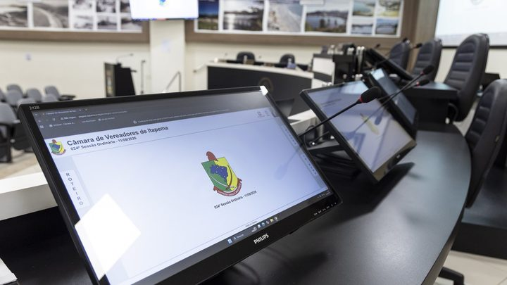

Itapema · Poder PúblicoSomamos as 83 listas de presença da Câmara de Itapema: 96% em 2026, seis vereadores sem nenhuma falta e a cadeira que mais faltou em 2025 está hoje com 100%
Quem está no plenário para votar isso.
O prefeito Alexandre Xepa mandou à Câmara o Projeto de Lei 606/2026, que muda a regra do dinheiro adiantado às secretarias para levar delegação a jogo, festival e apresentação. Hoje a lei tem um valor único, R$ 57.208,33. O projeto põe no lugar quatro tetos, conforme o número de modalidades do evento: R$ 30 mil, R$ 60 mil, R$ 90 mil e R$ 120 mil. O de cima fica 109,8% acima do atual e o de baixo, 47,6% abaixo. O texto foi criado no sistema da Câmara às 15h06 de segunda-feira e está na pauta da sessão desta terça, às 18h, com pedido de urgência especial: 26 horas e 54 minutos entre uma coisa e outra. Abrimos o projeto e a justificativa, somamos as quatro faixas e medimos a folga de cada uma sobre o que a cidade já gastou.
Em 30 segundos · Modo de Leitura, formato original Santa Informa
Itapema manda delegação para fora.
Jogo, olimpíada, festival, apresentação.
Vai atleta, vai grupo de dança, vai idoso, vai estudante.
Para pagar essa viagem a Prefeitura usa adiantamento.
É dinheiro entregue a um servidor responsável.
Ele gasta e depois presta contas.
Hoje existe um teto único por adiantamento.
São R$ 57.208,33.
O prefeito quer trocar esse teto único.
No lugar entram quatro faixas.
Até 2 modalidades: R$ 30 mil.
De 3 a 5: R$ 60 mil.
De 6 a 8: R$ 90 mil.
De 9 em diante: R$ 120 mil.
O teto maior sobe 109,8%.
O menor cai 47,6%.
Evento pequeno passa a ter limite mais apertado.
Evento grande passa a ter limite maior.
As faixas não estão escritas em real.
Estão escritas em UFRM, a unidade fiscal do município.
5.639, 11.278, 16.917 e 22.556 UFRM.
São o mesmo número multiplicado por 1, 2, 3 e 4.
Como está em UFRM, o valor sobe sozinho todo 1º de janeiro.
Não precisa de lei nova para corrigir.
A justificativa cita 21 decretos.
São de abril de 2025 a setembro de 2026.
O menor foi de R$ 5.175,00.
O maior, de R$ 106.160,00.
Esse maior está acima do teto que vale hoje.
O projeto também aperta o controle.
Proíbe pagar diária e adiantamento pelo mesmo evento.
Proíbe adiantamento a quem está devendo prestação de contas.
E autoriza cartão corporativo, com regra escrita.
A sessão é nesta terça, às 18h.
Só vota hoje se a urgência passar antes.
Poder PúblicoPublicada em Redação Santa Informa
A Câmara de Itapema recebeu na segunda-feira, 28 de setembro, o Projeto de Lei 606/2026, do Executivo. Ele altera o artigo 1º da Lei 3.721, de março de 2018, que autoriza a Prefeitura a adiantar dinheiro às secretarias para bancar a ida de delegações a competições, jogos, olimpíadas, apresentações artísticas, festivais e atos oficiais. O texto hoje traz um valor único por adiantamento, R$ 57.208,33. O projeto troca esse número por quatro tetos, conforme o tamanho do evento: R$ 30 mil para até duas modalidades, R$ 60 mil de três a cinco, R$ 90 mil de seis a oito e R$ 120 mil de nove em diante.
A conta é nossa e mostra os dois sentidos da mudança. O teto de cima fica 109,8% acima do valor único de hoje. O de baixo fica 47,6% abaixo. Ou seja, viagem de uma ou duas modalidades passa a ter limite bem mais curto do que tem hoje, e só evento grande alcança o número que virou manchete. Outro detalhe que não está escrito em lugar nenhum: as quatro faixas são o mesmo número multiplicado por um, dois, três e quatro. O projeto as escreve em UFRM, a unidade fiscal do município: 5.639, 11.278, 16.917 e 22.556. Como o valor fica indexado, ele sobe sozinho todo 1º de janeiro, sem precisar de lei nova a cada defasagem. É o mesmo desenho que a lei das diárias de Itapema já usa desde 2022.
A justificativa assinada pelo prefeito cita um levantamento de 21 decretos de adiantamento entre abril de 2025 e setembro de 2026. O menor foi de R$ 5.175,00, para uma modalidade. O maior, de R$ 106.160,00, para nove modalidades ao mesmo tempo, com delegações de Esportes, da Pessoa Idosa e da Educação juntas. Esse maior está 85,6% acima do teto único que a lei fixa hoje. Medimos também a folga de cada faixa nova sobre o maior gasto já registrado dentro dela: a de R$ 60 mil sobra 6,6%, a de R$ 120 mil sobra 13%, a de R$ 30 mil sobra 23,5%, e a de R$ 90 mil sobra 75,8%. As três primeiras ficam coladas na realidade. A quarta, não.
Vale registrar a outra metade do projeto, que não aparece no resumo. O artigo 2º cria uma regra nova na lei de diárias de 2005: fica proibido pagar diária a servidor que já teve deslocamento, hospedagem ou alimentação pagos por adiantamento no mesmo evento. O projeto também veda adiantamento a quem está com duas prestações de contas em aberto, a quem está omisso e a quem teve conta reprovada por desvio, enquanto não devolver o dinheiro. Manda depositar tudo em conta específica, autoriza cartão corporativo com regra escrita e lista oito itens obrigatórios na prestação de contas, entre eles a lista nominal com CPF de quem viajou. A base declarada é a Instrução Normativa TC-33/2024 do Tribunal de Contas do Estado.
O resumo de 30 segundos está no topo e a versão completa é o texto acima. Aqui ficam as três leituras da casa sobre o mesmo assunto.
Clara, a otimista
A parte boa desse projeto está na metade que ninguém vai ler. Proibir que o mesmo servidor receba diária e adiantamento pelo mesmo evento é fechar uma porta que estava aberta. Exigir lista nominal com CPF de quem viajou é dizer quem foi, de verdade. Bloquear adiantamento novo para quem está devendo prestação de contas antiga é o tipo de regra que só incomoda quem devia mesmo.
E reparem que o teto de evento pequeno cai quase pela metade. Isso não é a cidade se dando mais folga, é a cidade se dando limites diferentes para coisas diferentes. Quem leva quatro atletas a um torneio não precisa do mesmo cheque de quem leva três secretarias inteiras.
Seu Prudêncio, o criterioso
Merece atenção o calendário. O projeto entrou no sistema às 15h06 de segunda, o pedido de urgência às 15h21, e a sessão que pode aprovar tudo começa às 18h de terça. São 26 horas e 54 minutos para ler um texto que muda teto de despesa, cria vedação em duas leis e traz doze parágrafos novos. A urgência existe no regimento e é legítima, mas quem vai votar precisa de tempo para ler, e quem paga precisa de tempo para opinar.
Vale acompanhar também a faixa de R$ 90 mil. Ela ficou 75,8% acima do maior valor já gasto na situação que ela cobre, enquanto as outras três ficaram entre 6,6% e 23,5%. Uma sugestão útil: explicar essa diferença em uma linha na própria justificativa. Custa nada e tira a pergunta da mesa antes que ela apareça.
Dito isso, o mérito é real e precisa ser dito. O projeto tira o valor do campo aberto e o amarra ao tamanho do evento, coloca na lei municipal o que o Tribunal de Contas já exige por norma, e indexa o teto à UFRM para não voltar aqui todo ano pedindo correção. É técnica de quem quer o gasto controlado, não de quem quer folga.
Caco, o sarcástico
Descobri nesta terça que existe tabela de preço para orgulho cívico. Até duas modalidades, R$ 30 mil. De nove para cima, R$ 120 mil. É quase um cardápio.
Adorei a parte que proíbe o servidor de receber diária e adiantamento pela mesma viagem. Quer dizer que dava. Agora não dá mais, e a gente segue firme fingindo que nunca pensou nisso.
E tem a faixa de R$ 90 mil, que sobra 75,8% em cima do que já se gastou nela. É o time que nunca perdeu comprando uniforme para a final. Vai que chega lá.
Fontes: o fato novo está na ficha do Projeto de Lei Ordinária 606/2026 na Câmara de Vereadores de Itapema, de onde saem a autoria do Executivo, a situação, o agendamento para a 31ª Sessão Ordinária de 29 de setembro de 2026 e o histórico de trâmite com data e hora de cada passo. O texto do projeto, a mensagem 041/2026 do prefeito, o valor único de R$ 57.208,33 que vale hoje, as quatro faixas em UFRM, o levantamento dos 21 decretos e os novos parágrafos de controle foram lidos na íntegra em PDF do próprio projeto, publicada pela Câmara. A descrição da pauta da sessão e a equivalência das faixas em reais estão na notícia da Câmara sobre a 31ª Sessão, de 29 de setembro de 2026. Os percentuais de variação, a folga de cada faixa, a relação de múltiplos entre elas e o intervalo de 26 horas e 54 minutos são contas nossas. Sobre a mesma Casa e a mesma semana, veja as 83 listas de presença da Câmara de Itapema somadas por nós e o projeto que proíbe obra nova na rua durante a temporada.

Itapema · Poder PúblicoQuem está no plenário para votar isso.
 Itapema · Poder Público
Itapema · Poder PúblicoOutro projeto que voltou ao plenário.
De onde sai o dinheiro que paga a viagem.